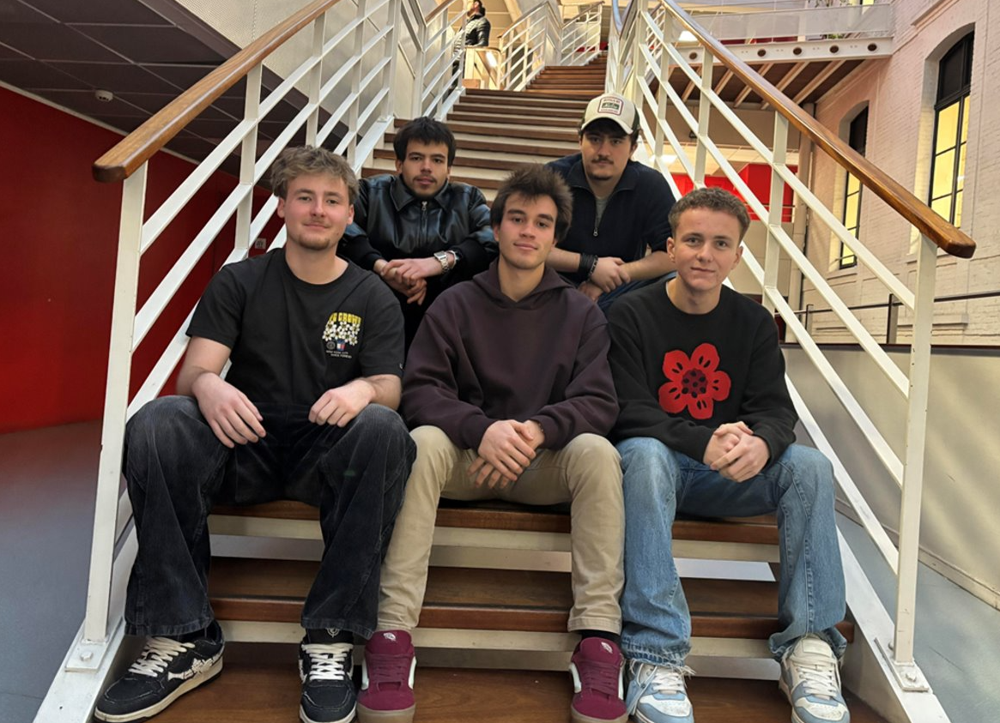
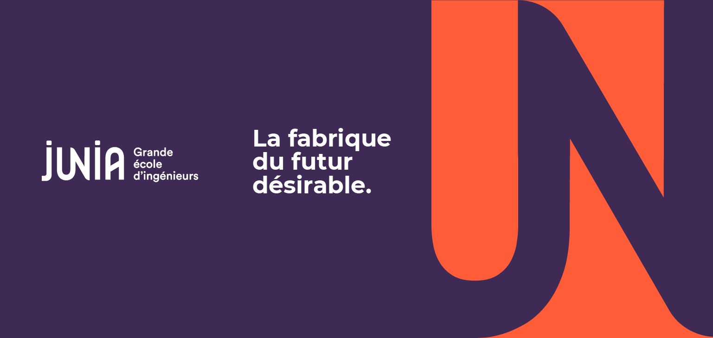

Qui sommes-nous ?
HORIZON est le projet de cinq étudiants en 1re et 2e année du cycle préparatoire ADIMAKER de l’école d’ingénieurs JUNIA à Lille.
Le retour d'opération extérieure ne s'arrête pas quand on pose le sac. Pour beaucoup de militaires, cette période est déroutante, éprouvante, parfois silencieuse.
Fatigue, stress, mal à reprendre une vie normale, incompréhension de l'entourage… Ces situations sont réelles et légitimes.
Mais il n'est pas toujours facile de savoir vers qui se tourner.
C'est pour çela que nous avons créé HORIZON.


Chef de projet : MALGRAS Aurélien
Équipe projet : MONGE-RODOT Atea, DEMARET Alexandre, KLINGLER Antonio, DEBLOCK Marius
Téléphone : 07 45 50 00 97
Email : aurelien.malgras05@gmail.com
Instagram : @horizon.adimaker
Junia : Junia.com